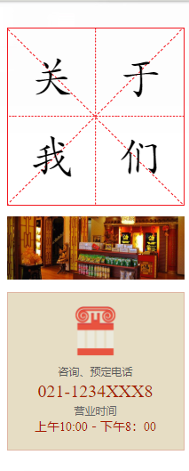

提出以茶叶打造“人文舒茶”、“绿色舒茶”，茶叶生产、加工势头强劲，茶园管理规范，良种选育和推广力度加大。
一是以xx茶场为龙头，着力打造舒茶茶叶品牌。XX茶场投资5万元购置安装了60立方米的茶叶保鲜库，购置了70型茶叶杀青机一套和单人茶树修剪机一 台，并投入使用。为方便园区交通，整修园区公路300米。XX茶场致力于名优茶生产,今年共生产销售名各类优茶5.5吨，产值100余万元；同时着手夏秋 茶开发，根据市场需求开发新的茶类。茶树良种选育方面继***茶树良种舒茶早及茶树新品系山坡绿、特香早后，选育出具优良特性的新品系“4号”
二是茶叶机械加工形势看好。舒茶镇去冬今春新购置成套茶叶加工机械两套，茶叶理条机一台。目前有我镇初具规模的茶叶加工厂10家，加工能力明显增加，茶农收入在今年茶叶减产的情况下，收入大幅增加。
三是茶园管理规范。今年全镇茶农新购置茶树修剪机5部（现有12部），茶树修剪质量明显增强，劳动强度明显减轻。预计在不久的将来，我镇茶农动不动便砍茶的习惯能够得到改变。
。由于茶叶效益增加，茶农老茶园更新和新开茶园的愿望增强。镇党委、政府及时提出“一人一亩养老茶园”的设想，初步计划在舒茶镇茶园村试点实施。
公司理念
公司简介
XXXXXX茶业有限公司源于中国铁观音发源地——安溪西坪。自公司于2002年创立以来，在短短的几年时间内取得了其他品牌茶企业需要花十几、二十年才能取得的成就，不断受到广大业内、媒体人士的关注，被誉为茶行业的“黑马”、茶业“隐形冠军”。 在铁观音世家传人XXX的带领下，企业总部逐渐形成了一支由茶行业内精英所组成的优秀团队，这支团队拥有众多技术人才、品牌运作高手和营运专家，在多年的团结拼搏中形成了“军队+学校+家庭”的强大的企业文化，是一支名副其实的茶行业特种部队。
关于我们
